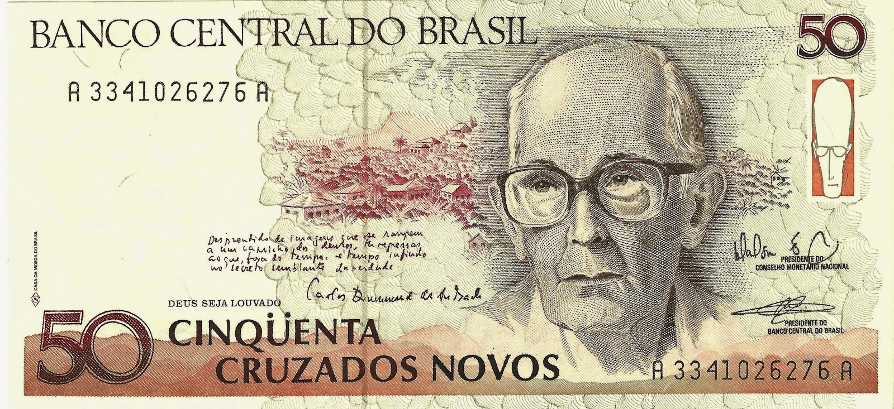
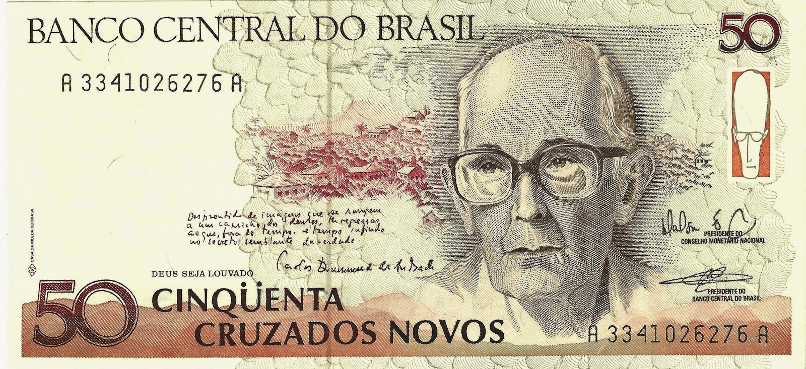

Réis(século 1694 até 1942)
O nome "réis" vem de real, moeda usada por Portugal no
início da colonização.
Oficialmente, a moeda portuguesa passou a circular no Brasil em
1568.
A primeira vez em que se utilizou "réis" num documento foi em 1575,
apesar da moeda só ter sido oficializada em 1645.
Governantes
Durante o período colonial, o Brasil era uma colônia de Portugal e, portanto, estava sob o comando dos governadores e vice-reis nomeados pela coroa portuguesa.
Já durante o Império do Brasil, que teve início em 1822, o país teve diversos imperadores, como Pedro I, Pedro II e a Princesa Isabel, que governaram o Brasil em diferentes momentos em que a moeda "Réis" foi utilizada.
Comparações
- A cada 1000 réis = R$ 62,50
- Valor do Cruzeiro = R$ 0,000001
- Um cruzeiro equivale a 1.000 réis.

Cruzeiro (1942-1967)
O cruzeiro foi criado em 1942, como parte de um plano de reforma monetária que visava combater a inflação e estabilizar a economia brasileira.
A nova moeda substituiu o antigo réis e foi emitida em notas e moedas de diferentes valores.
Durante sua existência, o cruzeiro passou por várias mudanças em sua denominação e valor, devido à inflação e à desvalorização da moeda.
Governates
Durante o período em que o Cruzeiro foi a moeda oficial do Brasil, entre 1942 e 1967, o país teve vários governantes, cada um com seu próprio estilo e políticas econômicas.
Abaixo estão alguns dos principais líderes políticos do Brasil durante o período do Cruzeiro:
Getúlio Vargas: Getúlio Vargas foi presidente do Brasil por dois mandatos não consecutivos, de 1930 a 1945 e de 1951 a 1954.
Eurico Gaspar Dutra: Eurico Gaspar Dutra foi presidente do Brasil entre 1946 e 1951.
Juscelino Kubitschek: Juscelino Kubitschek foi presidente do Brasil entre 1956 e 1961.
Comparações
- Valor do Cruzeiro = R$ 0,000001
- cruzeiro novo equivalia a = 1 cruzado


 
